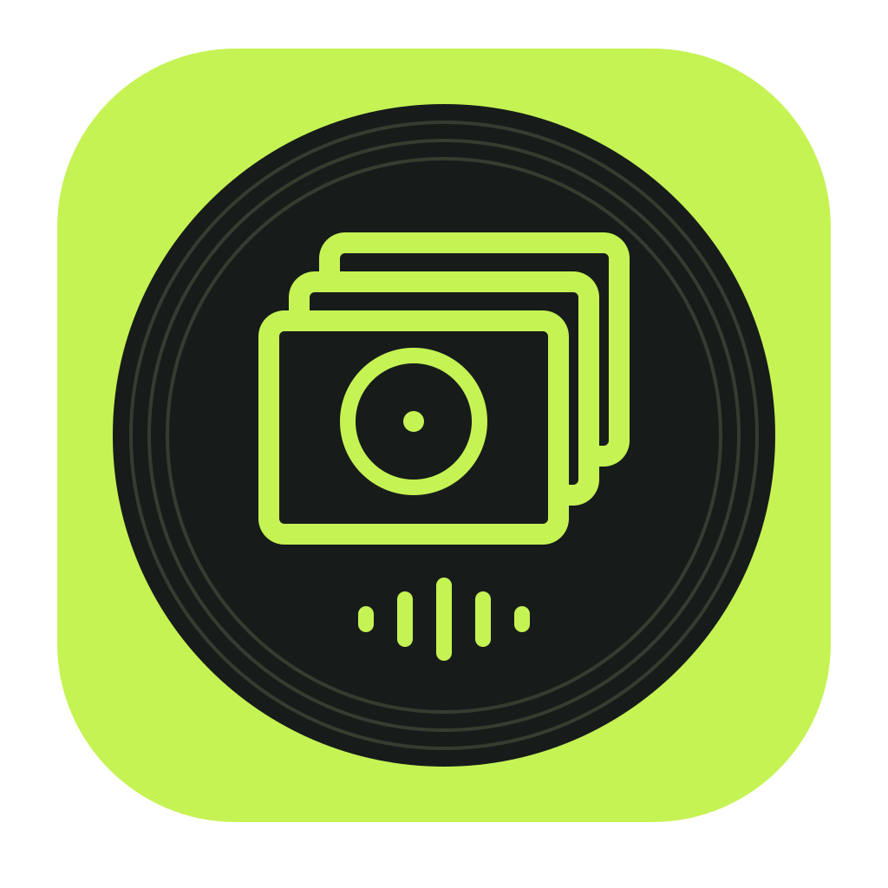
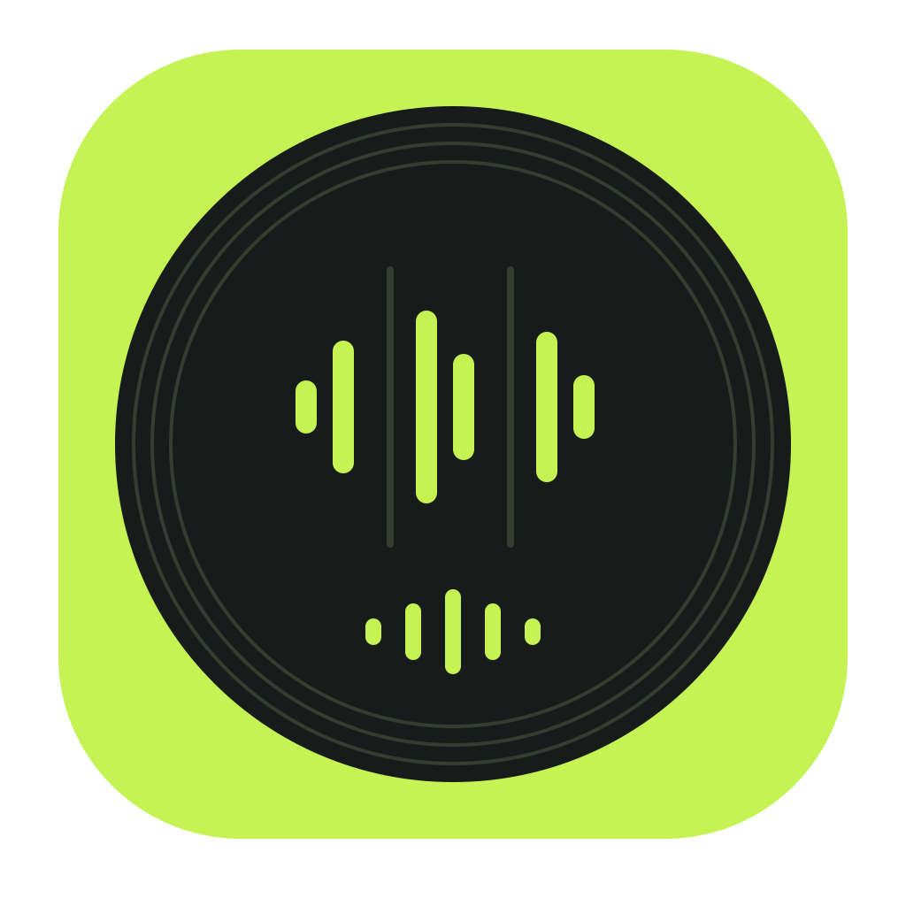
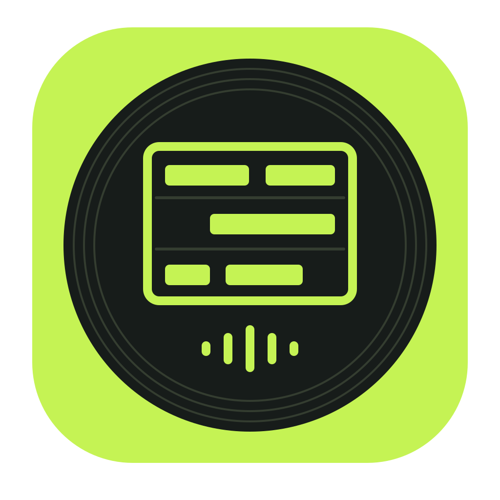
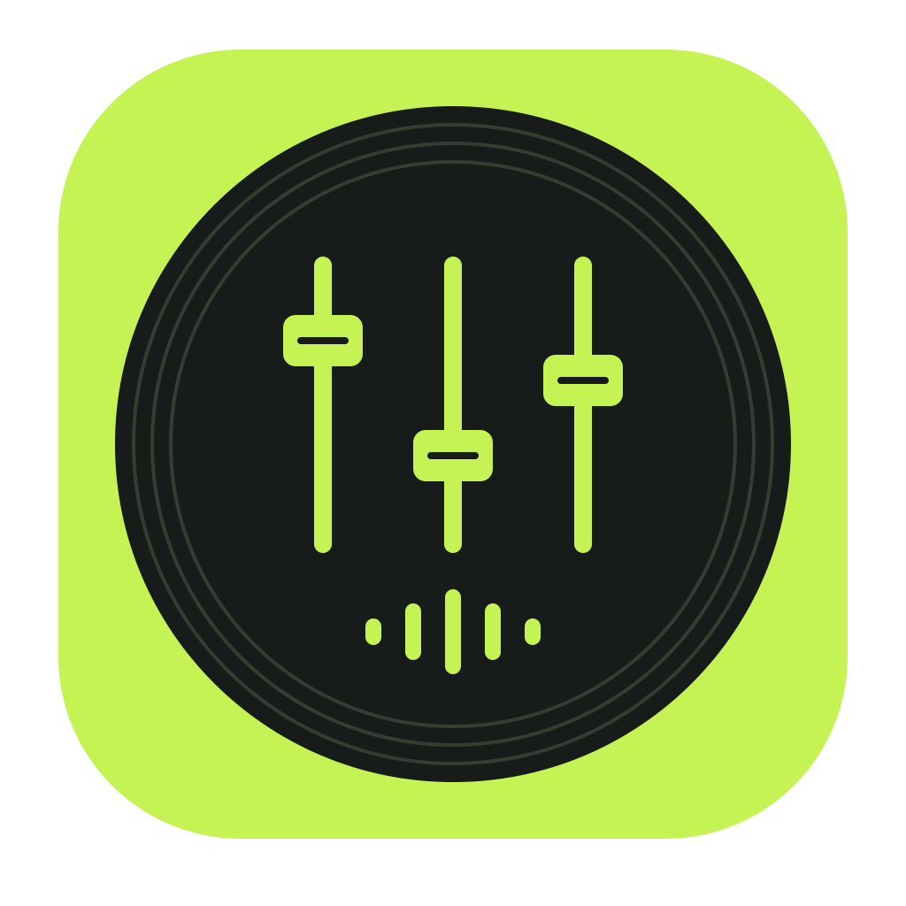
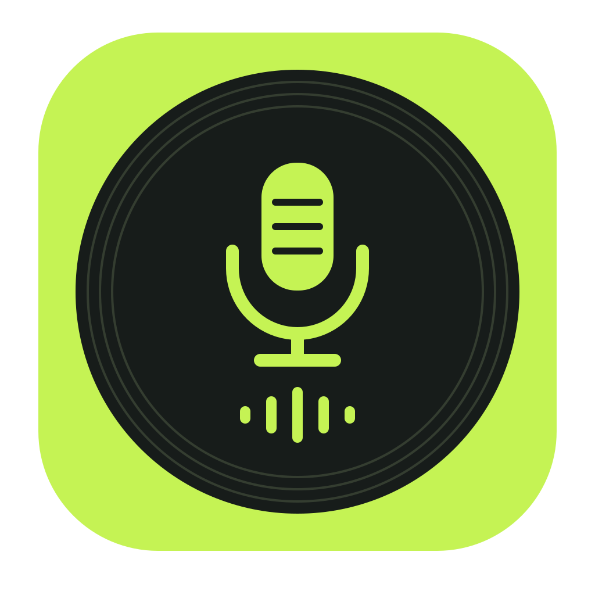
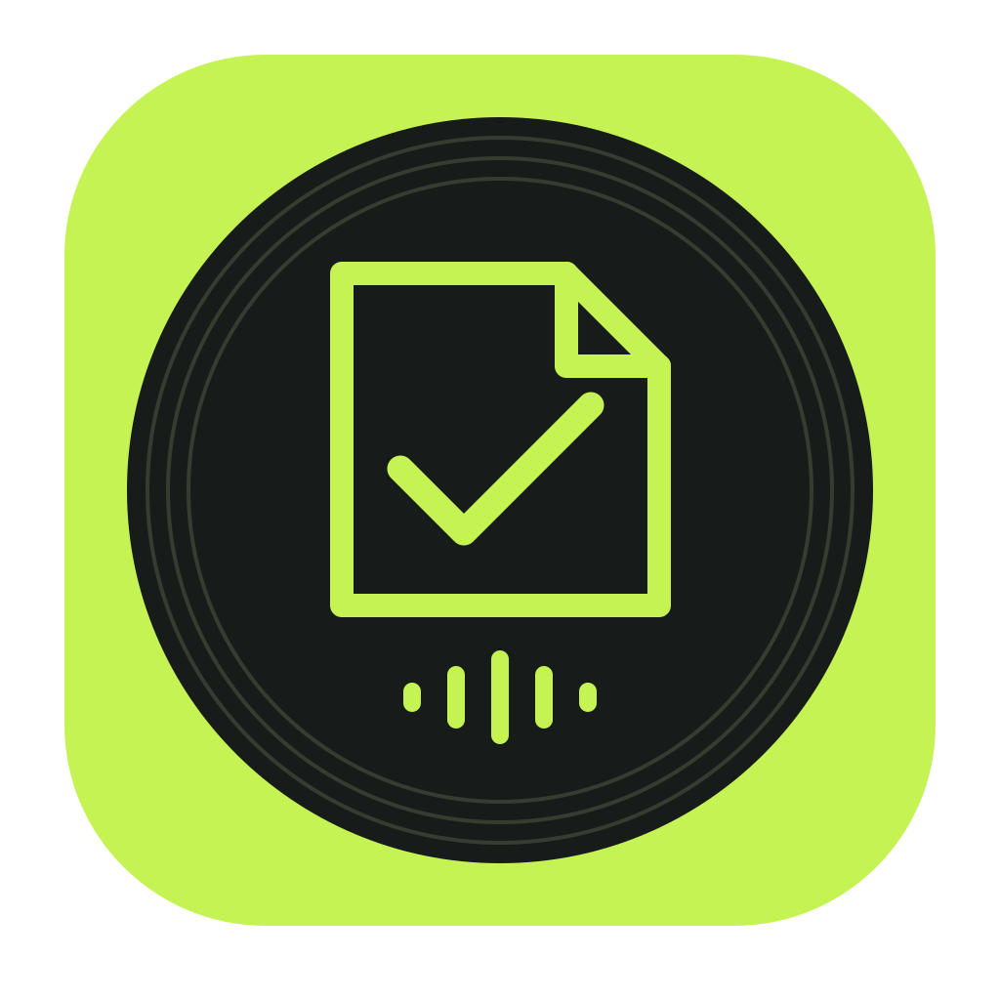
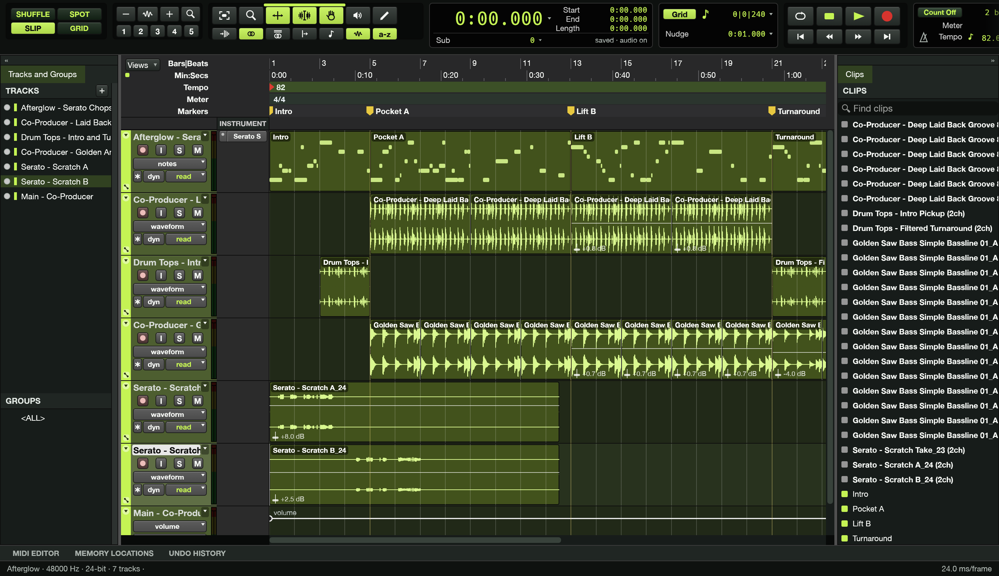

From the first sound
to the finished record.
Find a starting point. Shape the idea. Put your voice on it.
A connected workspace for the people making the music.
One room.
Your next record.
Good records start with a connection. A sound that catches your ear. A beat that gives you something to say. People who hear where it could go.
The Record Room brings that process together—from finding the first sample to recording your part, shaping the mix and gathering the paperwork that belongs with the music.
Six tools.
One conversation.
Each has a job.
The music is what connects them.
01
Crate
Find the feeling.
Browse beats and samples by tempo, key and mood. Preview, keep your favourites and collect the sounds that could become your song.
BEATS / SAMPLES / SHARED PICKS02
Chop
Make it your own.
Turn a sample into a new idea. Play pads, shape slices and build patterns, then bring the composition into the wider session.
SAMPLING / PADS / SEQUENCING03
Studio
Build the record.
The production home. Arrange audio and MIDI, play instruments, record scratches and shape the track on a full timeline.
ARRANGEMENT / INSTRUMENTS / RECORDING04
Mix
Find the balance.
Open a shared session, hear the parts together and work through the mix. Shape levels, arrangement and effects, then hand the result back to Studio.
LEVELS / EFFECTS / SESSION HANDOFF05
Booth
Put your voice in it.
Import a beat or open your song invitation. Record takes on your device, choose the performances you want to keep and decide what to send back.
Open Booth ↗06
Clear
Bring the details.
Keep sample sources, license evidence, credits and arrangement notes with the project. Prepare a delivery packet alongside the finished beat.
SOURCE RECORDS / LICENSE EVIDENCE / DELIVERYOfficial sample certificates come from their providers. Clear organizes the evidence; it does not grant rights or sign agreements.
Real tools.
Real sessions.
Our own workflow.
Built one record at a time.

See the room
in motion.
Bring your voice.
Bring your point of view.
Have a beat ready? Open Booth and start a local session. Already collaborating with us? Use the song invitation you were given to reach the right project.
Open Booth ↗For beats, sessions and collaborations: pullinplastic@gmail.com ↗
Starting together
Beat selection and production sessions are coordinated with your producer. The app lineup is our working studio system—not a public software download.
Your takes, your choice
Booth keeps local recordings on your device until you choose to export or publish. Keep a backup of the takes you want to retain.